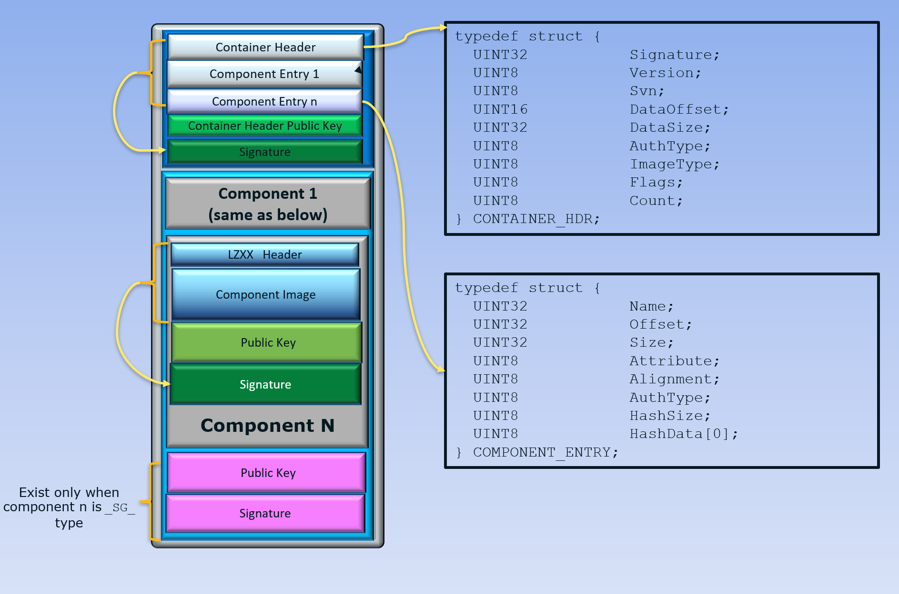

Container Tool
GenContainer.py is a tool used to generate the Slim Bootloader container images in a binary file format.
An SBL container is an encapsulation of multiple components as depicted in the following image:
{kind=link}
Image Types
1. Normal
This type of container contains a single component in it. The Component may be an ELF file, an UEFI-PI FV binary, or a PE32 file.
example command:
python GenContainer.py create -t NORMAL -cl UEFI:UefiPld.fd
2. Classic Linux
This container type is used to boot a typical Linux operating system. This container is made up of atleast two components - the kernel command line, and kernel image.
SBL expects the components inside the container in the following order: kernel command line, kernel image, and an optional initrd.
Dummy files need to be provided if one of the component is not in use.
For example, if initrd is not used, a dummy file needs to be provided in place of the initrd.
Additionally, more optional components like ACPI tables, and firmware blobs can be added to the container.
Some device drivers may require binary blobs for initialization. These are typically loaded from the filesytem.
In some use cases like fast boot, having access to these blobs before the filesystem is mounted may be desirable.
Packaging blobs within the container provides these drivers a way to get the blobs without waiting for the filesystem
to be mounted. When these additional blobs are packaged in the container, SBL can load them to memory and pass
the memory address to the operating system through the kernel command line. For this, SBL expects a placeholder
in the command line to put the address into. For example, if the blob’s component name when creating the container
was specified as BLOB, SBL will look for the string SBL.BLOB=0x0000000000000000 in the cmdline. The zeroes
will be patched with the actual memory address at which the blob was loaded.
File Order: cmdline.txt, bzImage (kernel), initrd, acpi, firmware1, firmware2, …
The Classic Linux container’s format is laid out below.
example command:
python GenContainer.py create -t CLASSIC -cl CMDL:cmdline.txt KRNL:bzImage INRD:initrd SBL.BLOB=0x0000000000000000
{kind=link}
3. Multiboot ELF
This type of container stores Multiboot / Multiboot-2 compliant ELF binaries and their corresponding command line files in pairs. The first ELF binary in the Multiboot container is assumed to be the one used for booting. If a binary does not use a command line, a dummy file needs to be provided in place of the command line file.
Files: cmdline1, elf1, cmdline2, elf2, …
example command:
python GenContainer.py create -t MULTIBOOT -cl CMD1:cmdline1 ELF1:mb.elf CMD2:cmdline2 ELF2:mb2.elf
Note
The default container type is Classic Linux.
ACPI Table Update
All the three container types support ACPI table update by packaging the ACPI blobs with the container. The method is slightly different for the MULTIBOOT container due to the nature of the files being present in pairs.
For NORMAL / CLASSIC LINUX containers:
ACPI blobs can be packaged into the container using the component name
ACPI. SBL will detect this component as a special case and update the ACPI tables.
example command:
python GenContainer.py create -t NORMAL -cl UEFI:UefiPld.fd ACPI:Dsdt.aml
For MULTIBOOT containers:
Since Multiboot files are in pairs (cmdline / boot file), a command line file containing a special signature is used to indicate that the corresponding boot file is actually an ACPI blob. The command used to create this file is:
Linux command to create signature file:
$ echo -n -e '\x86\x00\xb1\xac' > acpi_cmd
example command to create container:
python GenContainer.py create -t MULTIBOOT -cl CMD1:cmdline1 ELF1:mb.elf CMD2:cmdline2 ELF2:mb2.elf DUMY:acpi_cmd DSDT:Dsdt.aml
Tool Usage
Following operations are supported:
usage: GenContainer.py [-h] {view,create,extract,replace,sign} ...
positional arguments:
{view,create,extract,replace,sign}
command
view display a container image
create create a container image
extract extract a component image
replace replace a component image
sign compress and sign a component image
optional arguments:
-h, --help show this help message and exit
view:
usage: GenContainer.py view [-h] -i IMAGE optional arguments: -h, --help show this help message and exit -i IMAGE Container input image
example:
python GenContainer.py view -i ContainerImage.bin
create:
usage: GenContainer.py create [-h] (-l LAYOUT | -cl COMP_LIST [COMP_LIST ...]) [-t IMG_TYPE] [-o OUT_PATH] [-k KEY_PATH] [-cd COMP_DIR] [-td TOOL_DIR] [-a {SHA2_256, SHA2_384, RSA2048_PKCS1_SHA2_256, RSA3072_PKCS1_SHA2_384, RSA2048_PSS_SHA2_256, RSA3072_PSS_SHA2_384, NONE}] optional arguments: -h, --help show this help message and exit -l LAYOUT Container layout intput file if no -cl -cl COMP_LIST [COMP_LIST ...] List of each component files, following XXXX:FileName format -t IMG_TYPE Container Image Type : [NORMAL, CLASSIC, MULTIBOOT] -o OUT_PATH Container output directory/file -a {SHA2_256, SHA2_384, RSA2048_PKCS1_SHA2_256, RSA3072_PKCS1_SHA2_384, RSA2048_PSS_SHA2_256, RSA3072_PSS_SHA2_384, NONE} Authentication algorithm -k KEY_PATH KEY_ID or Private key file -cd COMP_DIR Componet image input directory -td TOOL_DIR Compression tool directory -s SVN Security version number for Component for no -cl option
Example 1 - using component list (
-cl):python GenContainer.py create -cl CMDL:cmdline.txt:$svn KRNL:vmlinuz:$svn INRD:initrd:$svn -o Out
- Notes:
When using a component list, the container header’s component name will be
BOOT.$svn is optional
Example 2 - using component layout file (
-l):python GenContainer.py create -l layout.txt -o Out
- Note:
Name of the container header component will be the name specified in the
layout.txtfile.
Note
layout.txt can look like following:
# Container Layout File
#
# Name , ImageFile ,CompAlg , AuthType, KeyFile , Alignment, Size, Svn
# ============================================================================================================================
( 'BOOT', 'Out' , '' , 'RSA2048_PSS_SHA2_256', 'KEY_ID_CONTAINER_RSA3072' , 0, 0, 0), <--- Container Hdr
( 'CMDL', 'cmdline.txt' , 'Lz4' , 'RSA2048_PSS_SHA2_256', 'KEY_ID_CONTAINER_COMP_RSA3072' , 0, 0, 0), <--- Component Entry 1
( 'KRNL', 'vmlinuz' , 'Lz4' , 'RSA2048_PSS_SHA2_256', 'KEY_ID_CONTAINER_COMP_RSA3072' , 0, 0, 0), <--- Component Entry 2
( 'INRD', 'initrd' , 'Lz4' , 'RSA2048_PSS_SHA2_256', 'KEY_ID_CONTAINER_COMP_RSA3072' , 0, 0, 0), <--- Component Entry 3
If you provide the full path or a file/dir name to output or key, in both layout.txt and command line, command line options will always overwrite the values in layout.txt.
extract:
usage: GenContainer.py extract [-h] -i IMAGE [-n COMP_NAME] [-od OUT_DIR] [-td TOOL_DIR] optional arguments: -h, --help show this help message and exit -i IMAGE Container input image path -n COMP_NAME Component name to extract -od OUT_DIR Output directory -td TOOL_DIR Compression tool directory
example:
python GenContainer.py extract -i ContainerImage.bin -od ExtDir
replace:
usage: GenContainer.py replace [-h] -i IMAGE [-o NEW_NAME] -n COMP_NAME -f COMP_FILE [-c {lz4,lzma,dummy}] [-k KEY_FILE] [-od OUT_DIR] [-td TOOL_DIR] optional arguments: -h, --help show this help message and exit -i IMAGE Container input image path -o NEW_NAME Container new output image name -n COMP_NAME Component name to replace -f COMP_FILE Component input file path -c {lz4,lzma,dummy} compression algorithm -k KEY_FILE KEY_ID/Private key file path to sign component -od OUT_DIR Output directory -td TOOL_DIR Compression tool directory -s SVN Security version number for Component
example:
python GenContainer.py replace -i ContainerImage.bin -od Out -n CMDL -f new_cmdline.txt
sign:
usage: GenContainer.py sign [-h] -f COMP_FILE [-o SIGN_FILE] [-c {lz4,lzma,dummy}] [-a {SHA2_256, SHA2_384, RSA2048_PKCS1_SHA2_256, RSA3072_PKCS1_SHA2_384, RSA2048_PSS_SHA2_256, RSA3072_PSS_SHA2_384, NONE}] [-k KEY_FILE] [-od OUT_DIR] [-td TOOL_DIR] optional arguments: -h, --help show this help message and exit -f COMP_FILE Component input file path -o SIGN_FILE Signed output image name -c {lz4,lzma,dummy} compression algorithm -a {SHA2_256, SHA2_384, RSA2048_PKCS1_SHA2_256, RSA3072_PKCS1_SHA2_384, RSA2048_PSS_SHA2_256, RSA3072_PSS_SHA2_384, NONE} Authentication algorithm -k KEY_FILE KEY_ID or Private key file path to sign component -od OUT_DIR Output directory -td TOOL_DIR Compression tool directory
example:
python GenContainer.py sign -f <ComponentImage/ContainerImage.bin> -c lz4 -td <path-to-Lz4Compress.exe>